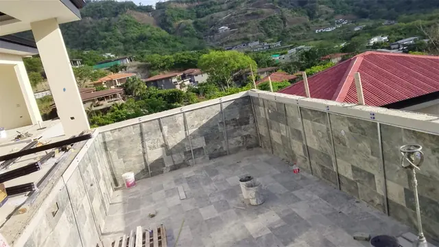

Instalación de porcelanato, cerámica y enchapes en Guanacaste
Colocamos pisos y paredes de porcelanato, cerámica y piedra con sistema de nivelación, para que las piezas queden parejas y las sisas rectas.

Qué instalamos
Pisos, paredes, gradas y piscinas.
- Porcelanato de gran formatoEn pisos y paredes, con cortes a medida.
- Porcelanato tipo maderaEn salas, cuartos, pasillos y gradas.
- CerámicaPara pisos interiores, baños y cocinas.
- Enchape de piedraEn piscinas y muros.
- Baños y duchasParedes, nichos y pisos con caída hacia el desagüe.
Cómo lo colocamos
Un piso bien puesto se decide antes de pegar la primera pieza.
- Revisión de la superficieVerificamos que el contrapiso o la pared estén firmes, secos y a nivel.
- ModulaciónDefinimos dónde arranca la primera pieza para que los cortes queden en los bordes.
- Colocación con niveladoresCada pieza se asienta con mortero y se nivela con cuñas, como se ve en las fotos.
- Fragua y limpiezaSellamos las sisas y entregamos el piso limpio.
Enchapes en obras nuestras
Terrazas, pisos, gradas y piscinas.



Preguntas frecuentes
¿Qué diferencia hay entre porcelanato y cerámica?
El porcelanato es más denso y absorbe menos agua, por eso aguanta mejor el tránsito y los exteriores. La cerámica es más liviana y fácil de cortar, y funciona bien en interiores.
¿Para qué sirve el sistema de nivelación?
Son cuñas y clips que mantienen las piezas a la misma altura mientras seca el mortero. Evitan que una pieza quede más alta que la de al lado, algo que se nota mucho en los formatos grandes.
¿Se puede colocar porcelanato sobre el piso viejo?
A veces. El piso viejo tiene que estar firme, sin piezas sueltas y a nivel, y hay que revisar que la nueva altura no estorbe las puertas. Si no cumple, se quita primero.
¿Enchapan piscinas?
Sí. En las fotos hay una piscina enchapada en piedra, en paredes y fondo.
Constructora VS
Díganos cuántos metros son, qué material quiere y dónde está la obra. Le respondemos por WhatsApp.
- 8666 1519WhatsApp
- Yerimy Valverde Salazar
- 7248 3151Nayeri Valverde
- vs_constructura_Facebook
- vs_constructura_Instagram